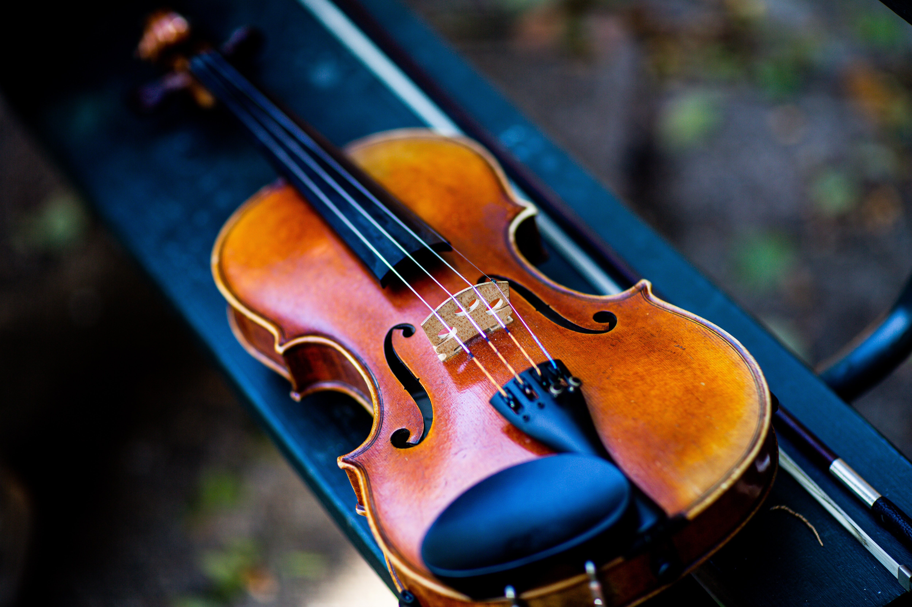

A música clássica surgiu na Europa pra divertir os monarcas por volta dos anos 1500, alem de que
muito usada nas cerimônias religiosas! 200 anos depois, começaram a aparecer as primeiras orquestras da história,
apresentam uma instrumentação complexa e por ser executada em formato de sinfonia. A chegada da Família Real de
Portugal, em 1808, estimulou o acesso dos brasileiros à música erudita, então associada a nobreza,
elegância e cultura.
Algumas características presentes nesse movimento são:
- Instrumentação variada
- Ênfase na expressividade emocional
- Harmonia elaborada
- Influência de compositores clássicos